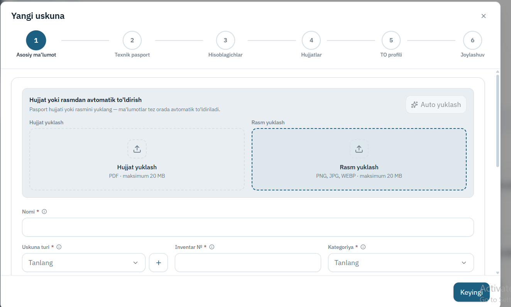
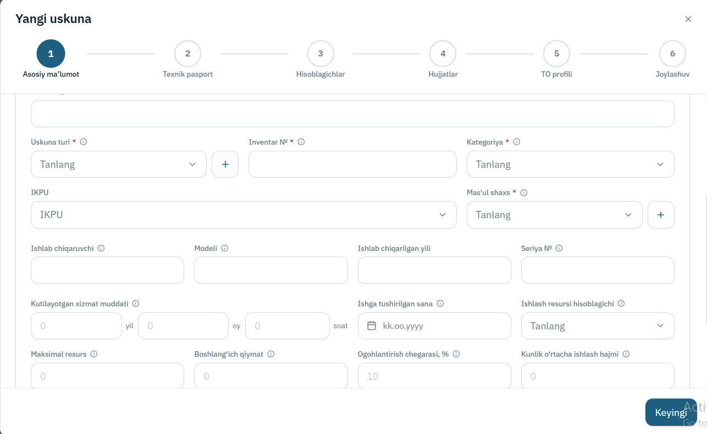
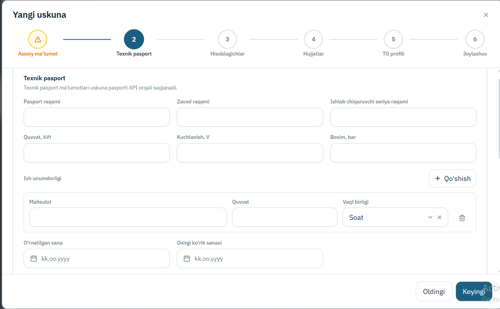
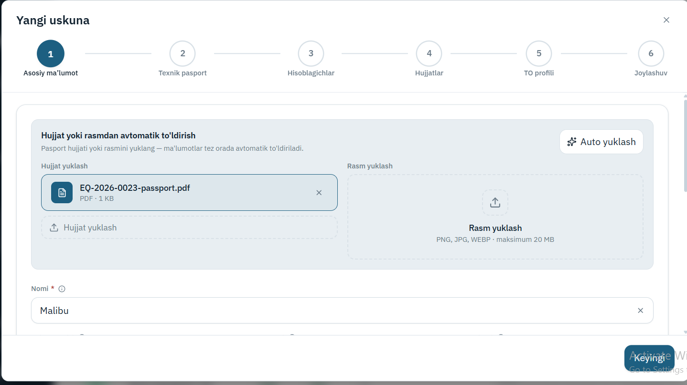
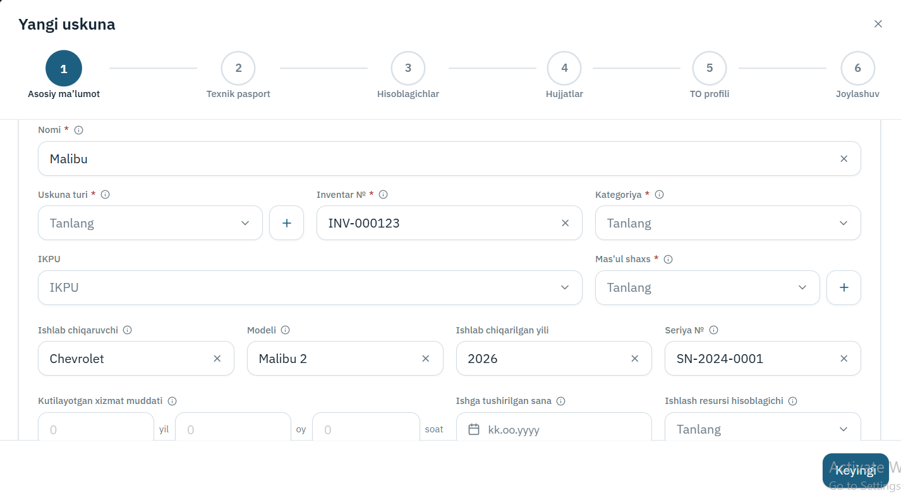
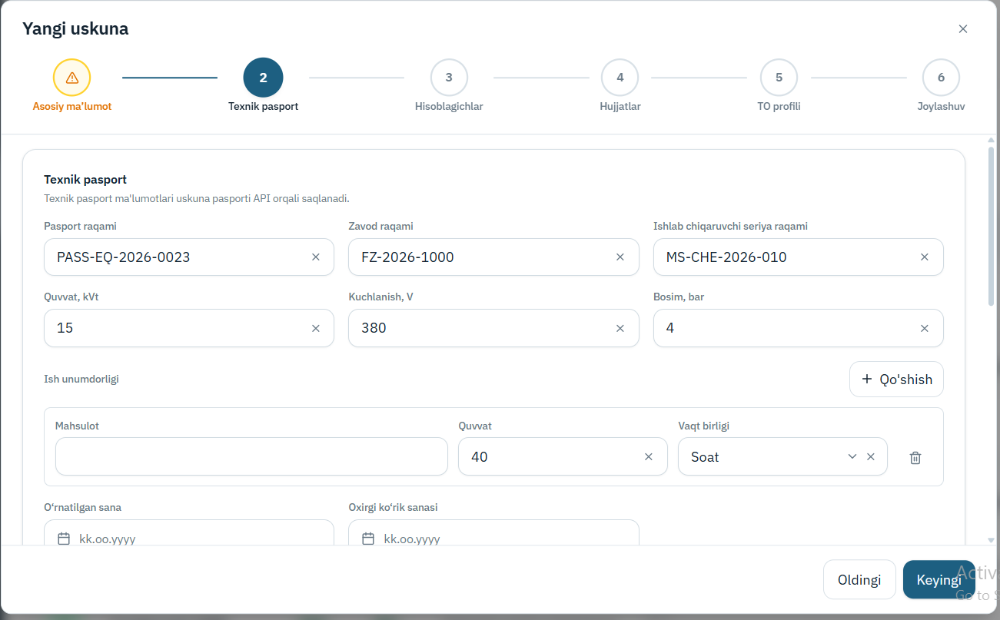

Texnik pasport OCR
Uskuna pasportining rasmi yoki PDF fayli yuklanadi — tizim undan model, seriya raqami, ishlab chiqaruvchi va texnik ko'rsatkichlarni ajratib, tayyor maydonlar ko'rinishida qaytaradi.
Maqsad
Nima muammoni hal qiladi.
Yangi uskuna kelganda uning pasporti qo'lda tizimga kiritiladi: o'nlab maydon — model, zavod raqami, quvvat, ishlab chiqarilgan yil. Bu sekin ish va bitta raqamda adashish keyin butun ta'mirlash tarixini buzadi.
Bu yerda pasport suratga olinadi, qolganini tizim
qiladi. Eng muhimi — ko'rinmagan maydon
o'ylab topilmaydi: u null bo'lib qaytadi.
Chala to'ldirilgan pasport yolg'on to'ldirilganidan
xavfsizroq.
Ishlash WorkFlow
Tugun ustiga bosing — nima qilishi haqida qisqa ma'lumot chiqadi.
Namunalar





